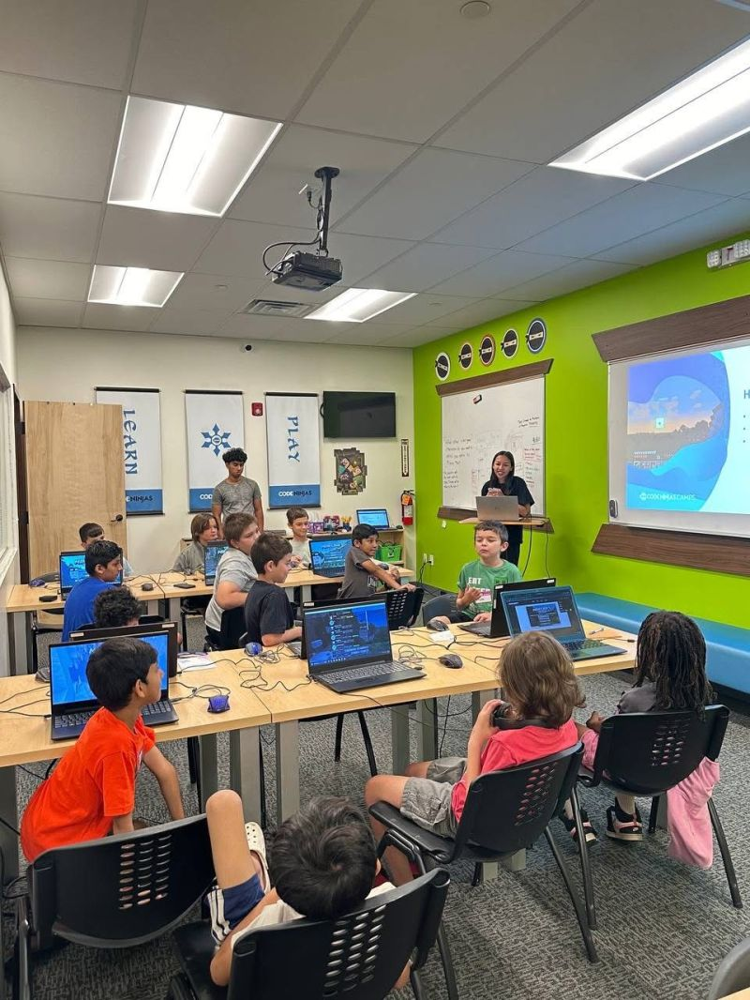
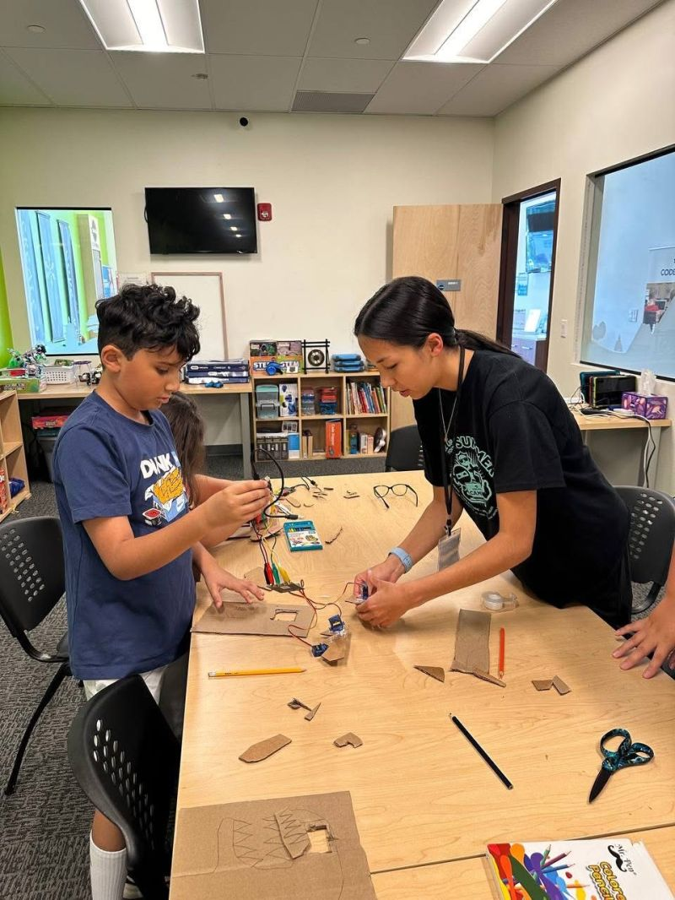
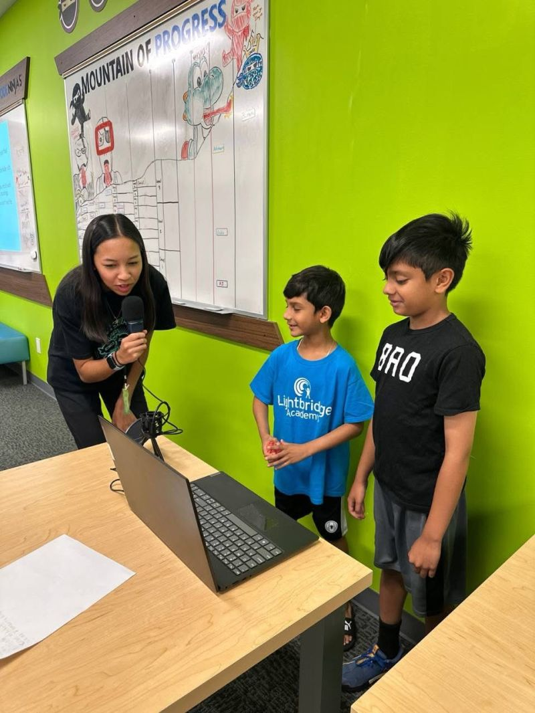

Coding Instructor
Code Ninjas

Overview
As a Coding Instructor at Code Ninjas, I teach week-long STEM summer camps for students ages 7 and older. The camps introduce foundational concepts in programming, game development, artificial intelligence, robotics, and online safety through a variety of hands-on activities. Each week, students complete a series of small challenges that gradually build toward a final project, which they present to their parents during a showcase at the end of camp.
What I did
My main responsibility was guiding students through coding and STEM-focused camps, while making sure that each lesson remained engaging for all ages and experience levels. I taught programming fundamentals, game design concepts, and digital safety topics, helping students learn to problem solve and strengthen critical thinking skills. Each day, campers completed activities that contributed to a larger final project, allowing them to apply newly learned concepts in a meaningful way. As each week progressed, I would adapt lessons and teaching methods to accommodate different learning styles, ensuring every student could participate and succeed. These past two summers I had the chance to teach the following camps:
What I learned
Working at Code Ninjas strengthened my communication, leadership, and problem-solving skills. One of the most valuable lessons was learning how to adapt technical concepts for students with different backgrounds, ages, and learning speeds. The experience also improved my ability to break down complex topics into smaller steps, a skill that is valuable in both software development and collaborative team environments. Seeing students progress from simple daily exercises to confidently showing off their final projects reinforced the importance of engaging learning.

